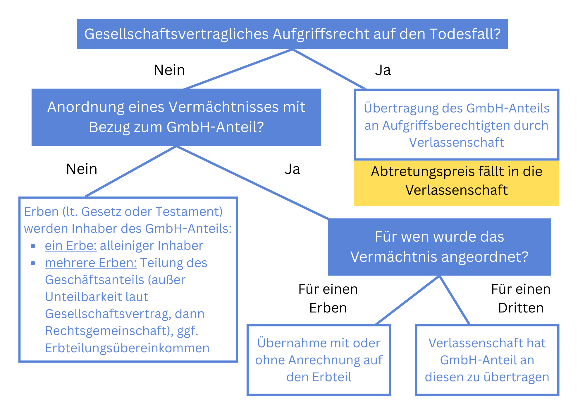

Der GmbH-Anteil in der Verlassenschaft
Der Tod eines GmbH-Gesellschafters löst in der Verlassenschaft nicht nur erbrechtliche, sondern auch gesellschaftsrechtliche Fragestellungen aus. Welche Rechte haben die Erben an den GmbH-Anteilen? Können diese einfach vererbt werden oder unterliegen sie bestimmten Beschränkungen durch den Gesellschaftsvertrag? Im österreichischen Recht regeln spezielle Bestimmungen das Schicksal von GmbH-Anteilen im Erbfall. Der vorliegende Beitrag beleuchtet die wesentlichen Aspekte der GmbH-Anteilsübertragung von Todes wegen, der Auswirkung auf die Geschäftsführung und mögliche Nachfolgeregelungen.
Allgemeines zum rechtlichen Schicksal eines GmbH-Anteils im Todesfall
GmbH-Anteile sind grundsätzlich vererblich (§ 76 Abs 1 GmbHG). Daher tritt mit dem Tod eines Gesellschafters per Gesetz die Verlassenschaft vorübergehend als Gesellschafterin in die GmbH ein. Als solche übt die Verlassenschaft auch die Gesellschafterrechte einschließlich des Stimmrechts in der Generalversammlung aus. Hierbei wird die Verlassenschaft entweder durch die erbantrittserklärten Erben oder mangels vertretungsbefugter Erben durch einen Verlassenschaftskurator vertreten. Mit der Einantwortung der Verlassenschaft an die Erbengeht der Anteil durch Gesamtrechtsnachfolge auf die Erben über.
Sind mehrere Erben vorhanden, so wird der Geschäftsanteil - mangels anderer Regelung im Gesellschaftsvertrag (§ 79 Abs 1 GmbHG) - mit Rechtskraft der Einantwortung zwischen den Erben im Ausmaß der Erbquoten geteilt . Während bei einer Übertragung unter Lebenden die Teilbarkeit des Geschäftsanteils ausdrücklich im Gesellschaftsvertrag vorgesehen sein muss, wird bei der Übertragung im Erbweg die Teilbarkeit von Gesetzes wegen vermutet.
Der Gesellschaftsvertrag kann allerdings eine Teilbarkeit im Erbfall ausschließen oder die Teilung von der Zustimmung der Gesellschaft abhängig machen (§ 79 Abs 2 GmbHG). Im Falle einer Zustimmung zur Teilung muss diese schriftlich erfolgen und die Person des Erwerbers sowie den Betrag der zu übernehmenden Stammeinlage benennen (§ 79 Abs 3 GmbHG). Unterbleibt eine Teilung des Geschäftsanteils, so entsteht zwischen den Erben eine Rechtsgemeinschaft (§ 80 GmbHG). Innerhalb einer solchen Rechtsgemeinschaft können die Rechte aus der Gesellschaft nur gemeinschaftlich ausgeübt werden, wobei die Erben solidarisch, daher jeweils zur ungeteilten Hand, für Verpflichtungen aus dem Anteil haften. Ein weiterer Anwendungsfall des zwangsläufigen Entstehens einer Rechtsgemeinschaft ist, wenn der Mindestbetrag der übernommenen Stammeinlage (§ 6 Abs 1 GmbHG) durch die Teilung unter den Betrag von EUR 70 fallen würde (§ 79 Abs 4 GmbHG).
Gesellschaftsverträge können zudem Bestimmungen über die Vererblichkeit von GmbH-Anteilen im Todesfall in Form von Übertragungsbeschränkungen enthalten. Übliche Regelungen in diesem Zusammenhang sind beispielsweise Aufgriffsrechte (§ 79 Abs 2 GmbHG), welche an den Todesfall eines Gesellschafters geknüpft sind. Das Aufgriffsrecht gibt dabei den übrigen Gesellschaftern oder Dritten das vorrangige Recht, den Geschäftsanteil des Verstorbenen binnen einer gewissen Frist zu erwerben. Die Verlassenschaft bzw. die Erben sind verpflichtet, den Geschäftsanteil an den oder die Aufgriffsberechtigten zu übertragen. Solche Regelungen sehen regelmäßig einen Abtretungspreis vor, den der Aufgriffsberechtigte an die Verlassenschaft zu entrichten hat. Dieser Abtretungspreis kann auch unter dem Verkehrswert des Gesellschaftsanteils liegen, jedoch darf dadurch keine Beschränkung der Ansprüche der Pflichtteilsberechtigten erfolgen. Auf diese Weise kann im Ergebnis vermieden werden, dass die Erben in die Gesellschaft eintreten.
Beim Übergang eines Anteils muss vor der Einantwortung die Verlassenschaft und nach Einantwortung die Erben in das Firmenbuch eingetragen werden (§ 26 Abs 1 GmbHG). Im Verhältnis zur Gesellschaft gilt nämlich nur der im Firmenbuch Eingetragene als Gesellschafter (§ 78 Abs 1 GmbHG).
Gestaltungsmöglichkeiten zur Verhinderung von Zersplitterungen des GmbH-Anteils bei mehreren Miterben
Wie zuvor ausgeführt, sind Unteilbarkeitsklauseln im Gesellschaftsvertrageine Möglichkeit, die Zersplitterung der Beteiligungsverhältnisse durch das Ableben eines Gesellschafters zu verhindern, allerdings mit dem Nachteil, dass bei mehreren Erben eine Rechtsgemeinschaft entsteht. Aufgriffsrechte anderer Gesellschafter können zwar eine Zersplitterung verhindern, zumal sich in diesem Fall sogar das Beteiligungsausmaß anderer Gesellschafter erhöht. Oftmals ist aber gewünscht, dass vom Erblasser bestimmte Personen, wie z.B. Familienangehörige, in die Gesellschaft eintreten.
GmbH-Anteile können auch Gegenstand eines vom Erblasser letztwillig angeordneten Vermächtnisses sein. Auf diese Weise kann der Erblasser den GmbH-Anteil zur Verhinderung einer Zersplitterung an eine einzige Person vermachen (z.B. an die Ehegattin, welche in der GmbH tätig ist). Bei Anordnung eines Vermächtnisses geht aber der Geschäftsanteil nicht automatisch auf den Vermächtnisnehmer über, vielmehr erwirbt der Vermächtnisnehmer einen schuldrechtlichen Anspruch auf Übertragung gegenüber der Verlassenschaft. Wenn der Erblasser mehrere Erben einsetzt, kann er aber gleichzeitig vorsehen, dass der Geschäftsanteil nur auf einen Erben ohne Anrechnung (sog. Vorausvermächtnis) oder unter Anrechnung auf dessen Erbteil übergehen soll (sog. Hineinvermächtnis). Liegt ein Hineinvermächtnis vor, so handelt es sich im Zweifel dabei um eine Teilungsanordnung (§ 648 Abs 2 ABGB). Auch der Eintritt eines Vermächtnisnehmers in die Gesellschaft kann, weil es sich um eine Einzelrechtsnachfolge handelt (wie z.B. eine Veräußerung), durch eine Regelung im Gesellschaftsvertrag von der Zustimmung der Mitgesellschafter abhängig gemacht werden.
Bei mehreren Miterben kann allerdings auch in einem Erbteilungsübereinkommen vorgesehen werden, wer den Geschäftsanteil erhält, um eine Zersplitterung zu verhindern. Allenfalls kann auch vorgesehen werden, dass der Geschäftsanteil zwar geteilt wird bzw. in Form einer Rechtsgemeinschaft übernommen wird, aber nicht alle Miterben in die Gesellschaft eintreten (z.B. nur zwei von drei Kindern). Wird ein solches Erbteilungsübereinkommen vor Rechtskraft der Einantwortung geschlossen, geht der Geschäftsanteil direkt nur an die im Erbteilungsübereinkommen vorgesehenen Personen über. Auch beim Abschluss eines solchen Erbteilungsübereinkommens sind die Regelungen des Gesellschaftsvertrags zu beachten, welche hinsichtlich der Frage der Teilbarkeit grundsätzlich vorrangig sind.
Dem Erblasser und der Gesellschaft bieten sich also mehrere Möglichkeiten, das Schicksal des GmbH-Anteils im Todesfall eines Gesellschafters zu regeln. Da das Gesetz grundsätzlich eine Vererblichkeit von GmbH-Anteilen vorsieht, ist ein vollständiger Ausschluss der Vererblichkeit im Gesellschaftsvertrag unzulässig. Auch ein automatisches Anwachsen des Geschäftsanteils an die anderen Gesellschafter im Todesfall (wie es z.B. bei einer Personengesellschaft möglich wäre), wodurch nur ein Abfindungsguthaben in die Verlassenschaft fällt, ist bei einer GmbH unzulässig (OGH 07.08.2008, 6 Ob 150/08i). Ein faktischer Ausschluss der Erben vom Geschäftsanteil kann nur durch die Vereinbarung eines gesellschaftsvertraglichen Aufgriffsrechts auf den Todesfall erzielt werden.
Ableben des Geschäftsführers bzw. geschäftsführenden Gesellschafters
Der Tod des Geschäftsführers bzw. geschäftsführenden Gesellschafters einer GmbH hat keinen Einfluss auf den Bestand der Gesellschaft, da diese als eigene Rechtspersönlichkeit unverändert weiterbesteht. Bei der GmbH gilt der Grundsatz der Fremdorganschaft, der Geschäftsführer muss also nicht Geschäftsführer sein.
Allerdings führt der Tod des einzigen geschäftsführenden Gesellschafters einer GmbH zu einer vorübergehenden Vertretungslosigkeit der GmbH. Einer solchen Handlungsunfähigkeit kann zu Lebzeiten schon vorgebeugt werden, etwa durch Bestellung eines zweiten Geschäftsführers, Vollmachten an Mitarbeiter (die mit dem Tod des Geschäftsführers nicht automatisch erlöschen) oder durch Bestellung eines Prokuristen, der kraft Gesetz weitreichende Vertretungsbefugnisse hat. Die Vertretungslosigkeit einer GmbH sollte so kurz wie möglich gehalten werden, da in diesem Zeitraum ein Schaden zu Lasten der Gesellschaft eintreten kann (z.B. verspätete Kündigung von Verträgen, etc.).
Gesetzlich vorgesehen ist für den Tod des geschäftsführenden Gesellschafters, dass die verbleibenden Gesellschafter einer GmbH in der Generalversammlung unverzüglich einen neuen Geschäftsführer zu bestellen haben (§ 15 GmbHG). Diese Pflicht kann allerdings nicht gesondert durchgesetzt werden. Fehlen notwendige Geschäftsführer zur Vertretung der Gesellschaft, ist es auch möglich, beim zuständigen Gericht die Bestellung eines Notgeschäftsführers zu beantragen (z.B. auf Antrag eines Gläubigers, der eine Klage einbringen möchte). Diese gerichtliche Bestellung gilt in der Folge für den Zeitraum bis zur regulären Bestellung eines Geschäftsführers.
Änderungen im Gesellschafterbestand sowie Veränderungen in der Geschäftsführung der Gesellschaft sind unverzüglich durch die Geschäftsführer beim Firmenbuch anzumelden. Hierbei sind die erforderlichen Nachweise vorzulegen (z.B. Sterbeurkunde bei Tod des Geschäftsführers, Bestellungsbeschluss hinsichtlich des neuen Geschäftsführers).
Exkurs: Ableben des gewerberechtlichen Geschäftsführers
Verstirbt der gewerberechtliche Geschäftsführer, so darf das Gewerbe von der GmbH bis zur Bestellung eines neuen gewerberechtlichen Geschäftsführers, längstens jedoch für die Dauer von sechs Monaten ausgeübt werden (§ 9 Abs 2 GewO). Ein Fortführungsverfahren bei der Behörde ist in diesem Fall nicht erforderlich, weil die GmbH die Gewerbeinhaberin bleibt, es ist schlicht die Bestellung des neuen gewerberechtlichen Geschäftsführers anzuzeigen. Die zuständige Bezirksverwaltungsbehörde kann die Frist von sechs Monaten verkürzen, sofern durch die Ausübung des Gewerbes ohne einen Geschäftsführer eine besondere Gefahr für das Leben oder die Gesundheit von Menschen entsteht oder das Gewerbe in den letzten zwei Jahren bereits länger als sechs Monate ohne Geschäftsführer ausgeübt wurde.
Wird binnen der sechsmonatigen Frist nur ein handelsrechtlicher Geschäftsführer, aber kein gewerberechtlicher Geschäftsführer bestellt, etwa weil der handelsrechtliche Geschäftsführer nicht über die erforderliche Befähigung bei einem reglementierten Gewerbe verfügt, so drohen Verwaltungsstrafen. Bei einer GmbH ist die Bestellung eines gewerberechtlichen Geschäftsführers nämlich - unabhängig ob freies oder reglementiertes Gewerbe - verpflichtend (§ 9 Abs 1 GewO).
Bis zur Bestellung eines neuen gewerberechtlichen Geschäftsführers haften die handelsrechtlichen Geschäftsführer für Verstöße gegen gewerberechtliche Vorschriften. Bei gewerberechtlichen Übertretungen sind daher die Verwaltungsstrafen in diesem Zwischenzeitraum gegen die handelsrechtlichen Geschäftsführer zu verhängen.
Haben Sie noch Fragen zum Thema GmbH-Anteile im Erbfall?
Eine frühzeitige Beratung schafft Klarheit und hilft, Risiken im Verlassenschaftsverfahren rechtzeitig zu vermeiden. Ich unterstütze Sie bei einer rechtssicheren Einschätzung Ihrer Situation.